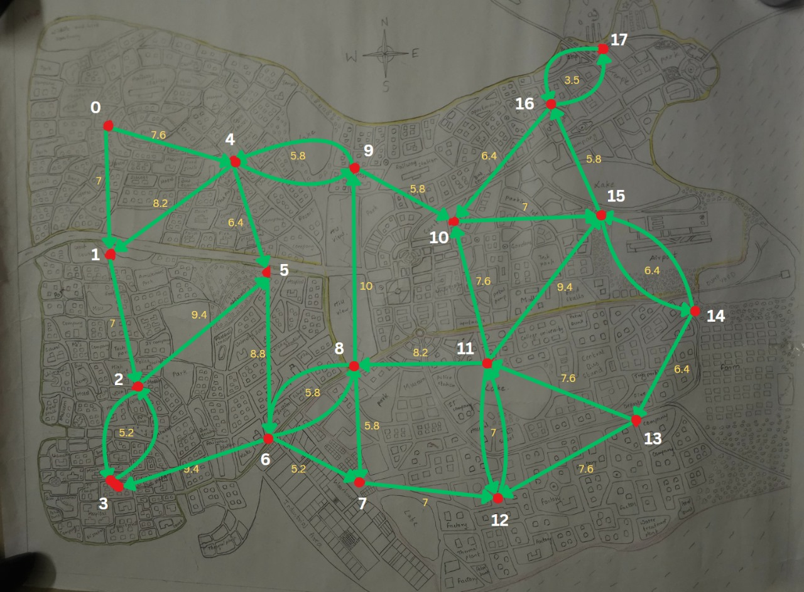

With the rise in electric vehicles, deploying smart EV charging stations ensures that residents and businesses have easy access to sustainable energy solutions. It improves mobility, reduces dependence on fossil fuels, and aligns with the city's eco-friendly and futuristic vision.
SDG 11: Sustainable Cities and Communities
- Target 11.2: Provide access to safe, affordable, accessible and sustainable transport systems for all, improving road safety, notably by expanding public transport, with special attention to the needs of those in vulnerable situations, women, children, persons with disabilities and older persons
- Indicator 11.2.1: Proportion of the population with convenient access to public transport and EV charging stations located within transportation hubs, residential areas, and commercial zones.
Objectives
- Deploy charging stations powered by renewable energy sources (solar, wind).
- Ensure EV charging stations are strategically placed near residential, commercial, and transport hubs.
- Encourage the use of electric vehicles, reducing reliance on fossil fuels and lowering air pollution.
- Optimize cost-effective and scalable infrastructure, ensuring minimal environmental impact.
Benefits
- Increased Accessibility: Ensures that charging stations are within a reasonable distance for all residents and businesses.
- Efficient Power Usage: Reduces energy wastage by optimizing grid usage and balancing the load during peak hours.
- Improved User Experience: Shortens wait times and provides a seamless charging experience through advanced scheduling.
- Encourages the adoption of EVs, reducing carbon emissions in the city.
Algorithm Used
- Algorithm: Dijkstra's algorithm
- Need: To ensure accessibility of EV charging station from all points in the city, shortest path algorithms like Dijkstra's Algorithm can be used.
- Input: Directed graph, where nodes are EV stations and weight is distance between them. Data: city_num.txt
- Output: Dijkstra's algorithm can efficiently determine the shortest paths between charging stations, allowing EV drivers to minimize the time spent traveling between charging stops.
Directed Graph:
Node: EV station, Weight: distance
